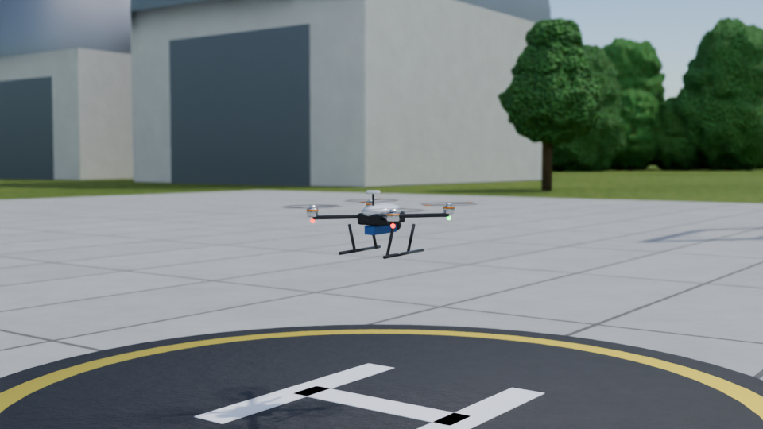
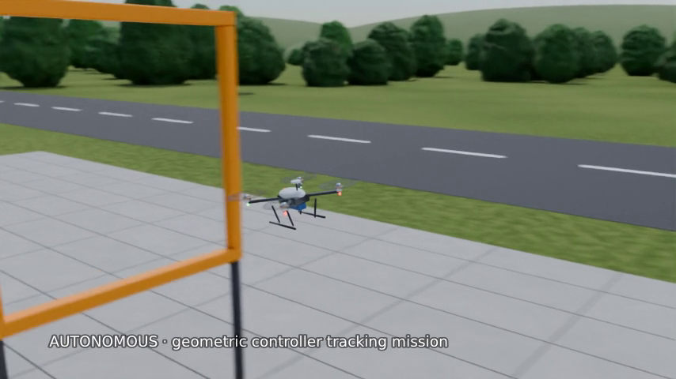
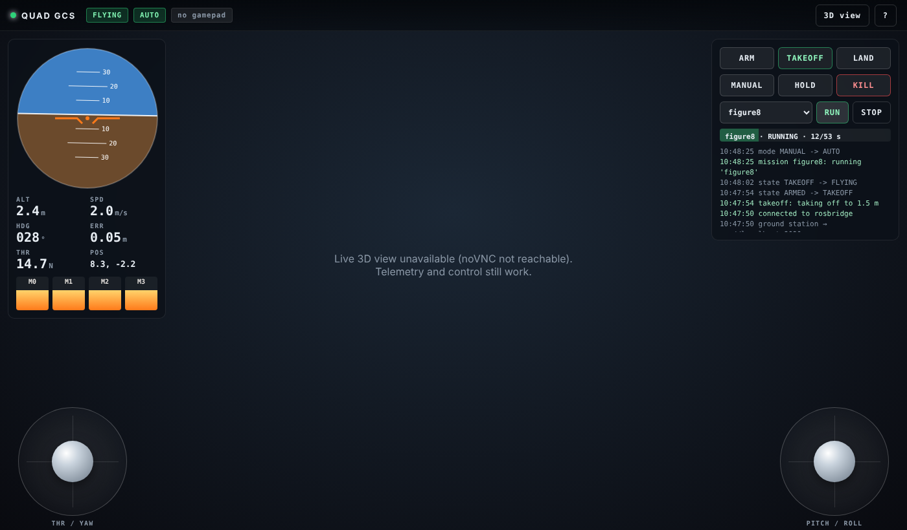

Robotics · Control & Simulation
Quadcopter control
An X-frame quadcopter (1.5 kg, 9-inch props) simulated in Gazebo Harmonic, with a hand-written ROS 2 Jazzy flight stack. Fly it with a joystick, or let it fly missions autonomously.
01 · Flight
Highlights




03 · Architecture
How the pieces connect
Switch between manual and autonomous flight to see which path drives the drone. This is a simplified view of the flight stack. Open the detailed illustrated version →
04 · Flight stack
What's inside
| Part | What it does |
|---|---|
| Flight controller | Geometric tracking controller on SE(3) with acceleration feed-forward, tilt and acceleration limits, anti-windup integrator, and a priority-aware motor mixer |
| Pilot interface | Mode-2 sticks commanding velocity, take-off, land and mission buttons, pilot override of autonomy, hold-to-kill |
| Autonomy | Missions with smooth C2 trajectories: figure-8, racing gates, cinematic orbit, lawn-mower survey |
| Safety logic | Arm, take-off and land state machine, auto-disarm, touchdown detection, geofence, reference-loss hold |
| Simulation | Gazebo Harmonic at 1 kHz physics, per-rotor motor model with lag and drag, noisy IMU, wind gusts |
05 · Links